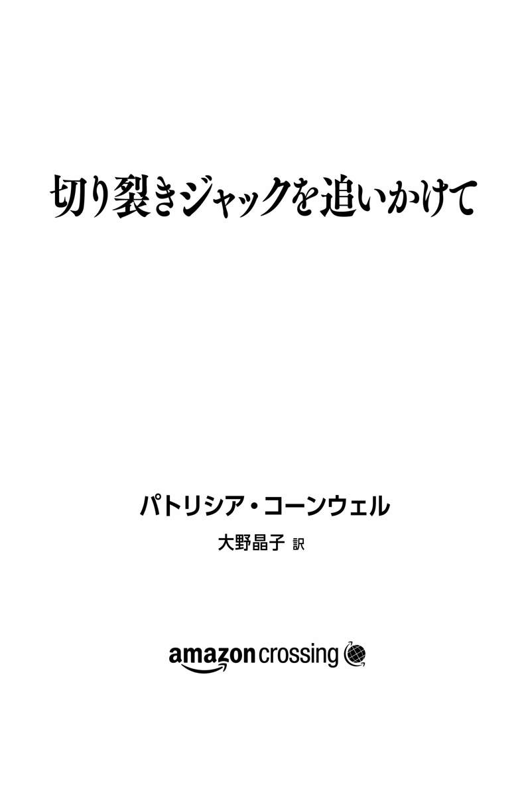

| 切り裂きジャックを追いかけて (Kindle Single) | |
| パトリシア・コーンウェル | |
| (2015) | |

わたしが人からいちばんよく訊かれるのは、ケイ・スカーペッタが登場する「検屍官」シリーズのことでも、私生活にかんすることでもない。切り裂きジャックの正体はイギリスの著名画家ウォルター・リチャード・シッカートだと、どうしてそこまで確信できるのか？――みんなそれを知りたがる。
なぜそんなことが可能なのか、どうしてそういい切れるのか？ いくつもの言語を流ちょうに話す知的でハンサムな男、しかも富豪や著名人の知り合いも多い男が、人を殺し、遺体を切り刻むなど、ありえるのか？ 当時、彼の妻だった育ちのいい女性は、なにか気づいていたのだろうか？ 友人や画家仲間は彼に疑いの目を向けていたのか？ 連続殺人を犯しておきながら、なぜ一世紀以上ものあいだ逃げおおせたのか？
「切り裂きジャック」という名前からして魅惑的だ。だれがそんなあだ名を思いついたのだろう？――まずまちがいなく、本人である。手紙の中で本人自らそう名乗り、ほかにもそのときどきの気分に合わせてさまざまな呼び名を使っている。シッカートは芸名、すなわち別名を持つことに慣れていた。子どものころから学芸会でシェイクスピア劇を演じ、一〇代で役者を目指しはじめた男なのだから。
役者時代、彼は「ミスター・ニーモ」と名乗っていた。「ニーモ」というのは「無名」を意味するラテン語だが、本人はまさしくそのとおりの気分だったのだろう。切り裂きジャックの犯行がはじまったころ、彼は二〇代後半に差しかかっていた。そのころにはすでに演技の道をあきらめ、駆けだしの画家としてなにかと批判されるようになっていた。良家の出の年上の妻に支えられる一方、誇大妄想的な師匠ジェームズ・マクニール・ホイッスラーに見下され、なじられてばかりいたのだ。
わたしが『真相〝切り裂きジャック〟は誰なのか？』（講談社刊）でこの事件の究明に乗りだすまで、切り裂きジャックが警察や報道機関に送りつけた侮蔑的なあざけりの手紙に「ニーモ」と署名されたものがあるという事実は、さほど重要視されていなかったようだ。いったん「ミスター・ノーバディ」と署名したあと、それを横線で消して「切り裂きジャック」と書き直した形跡のある電報も存在する。当時、警察はそうした奇異な点に着目していなかった。
また警察は、犯人が書いたでたらめな差出人住所「パンチ＆ジュディ通り」にも関心を示さなかった。複数の手紙に暴力的な人形劇『パンチとジュディ』を彷彿とさせる棒線画が描かれていることにも、注目していない。シッカートが子どものころ、酒好きでサディスティックな彼の父親は『パンチとジュディ』の挿絵と脚本を書いていたというのに、である。
切り裂きジャックの手紙には、さまざまないたずら書きやスケッチ、漫画が添えられている。彼は絵の具やクレヨンといった画材を好んで使い、シッカートが愛用していたものと同じ透かし入りの便箋に、その忌まわしい文章を綴っている。法科学分析を行ったところ、犯人とシッカートが使った便箋が一致した。両者が書いた手紙の多くがすでに失われていることを考えると、ほかにどれほどの一致例があるのかは想像もつかない。切り裂きジャックの通信文は数百通残っているが、それらは彼が実際にしたためたもののごく一部にすぎないと思われる。
なによりシッカートは、書字狂――すなわち、病的なほどなにかを書かずにはいられないたちだった。それは切り裂きジャックにしても同じだ。当初警察は、犯人が送りつけてきた残虐で暴力的な内容の手紙をとくに重視していなかった。手紙は、現存する唯一の正当な物的証拠だ。警察が保管を決めた電報やメモ、手紙や封筒などは、そのすべてがいまも残っているわけではない。第二次世界大戦中に破損したものもあれば、事件ファイルの公開後に行方知れずになったものもある。
わたしがここで紹介する例は、何層にも複雑に重ね合わされた調査結果のごく一部でしかない。これは並外れて複雑な調査で、頭がおかしくなりそうなほど微妙な要素に満ちている。調べるたびに、なにかが出てくる。しかし決定的な証拠はどこにもない。おそらくそんなものは永遠に出てこないだろう。当時の警察は目を向けるべきところに目を向けておらず、たしかな証拠として使えそうな指紋やＤＮＡを採取するには時間がたちすぎているというのがわたしの結論だ。犯罪現場というのは、いわば遺跡発掘現場のようなもので、いいかげんな発掘作業を行ったり、ブルドーザーを使ったりすれば、もはや取り返しがつかないのである。
二〇代後半に入るころには、シッカートは新たな役柄をつくり上げ、それを現実世界で自ら演じるようになっていた。彼の暴力的な性衝動についてはいくつも解釈がつけられるだろうが、彼が五歳になるまでに受けた三つの外科手術が原因だったというのがいちばん説得力がある。彼は性器もしくは直腸、あるいはその両方の手術を受けており、そのために性交渉ができなかった可能性があるのだ。いわゆる「医学的暴力」が彼の精神に甚大な影響を与えたことはまちがいないだろう。
手術の件に加え、彼には先天的な変形（「ペニスの孔」だと聞いている）があったようだというわたしの主張には、いまでも怒りに満ちた反論がよせられる。まるでわたしがイギリス人男性の性的能力を侮辱したかのように取られているが、そんなつもりは毛頭ない。わたしはただ、シッカートの「瘻孔」について読んだことと人から聞いたことを、くり返したにすぎないのだから。いずれにしても、この障害が正確にはどういうものだったのかについては、ほとんどが謎に包まれたままだ。しかし一八六〇年代のはじめには命にかかわることもあった手術で治そうとしたほど、彼の家族にとって深刻なものだったことだけはたしかなのである。
『真相〝切り裂きジャック〟は誰なのか？』を執筆した当時は、どこまで行けばこの調査が終わるのか、まったく見通しが立っていなかった。けっきょくここまでかかったことには、自分でも驚いている。変に聞こえるかもしれないが、わたしはこの調査を自ら望んでしてきたわけではない。大量の時間と費用がかかったのはもちろんのこと、さんざん気を散らされ、挫折を味わわされ、誹謗中傷を浴びせられてきたのだから。
それでも、これは究明すべき事件である。わたしにとって切り裂きジャックの追跡は、殺人ミステリーでもスリラーでもない。エッセイでも、映画でも、テレビドラマでもない。彼はたんなる娯楽の対象ではないし、彼が標的にした無防備な女性や子どもたちは、現実に命を奪われている。彼らは苦しみ、恐怖の中で死を迎えたのだ。わたしは、切り裂きジャックが殺したのは、いわれているように五人の売春婦だけではないと考えている。
被害者がほかにいなかったという根拠はどこにもなく、もうこれ以上、「被害者は五名」を確固たる事実とすべきではない。一八八八年一一月の頭にメアリー・ケリーが殺害されたのち、たんに警察が数を数えるのをやめただけの話なのだ。これ以上、おぞましい事件を切り裂きジャックの犯行と特定しなければ、恐怖におびえるロンドン市民も、あの気の触れた残虐な男はいなくなったと思ってくれるかもしれない。犯人は精神病院に入れられた、もっといいのは死んだと思ってもらえれば、こんな都合のよいことはなかったのだ。
切り裂きジャックが、政府、警察、そしてヴィクトリア女王その人にとって、実に迷惑な存在だったことは疑いようもない。彼の犯行のせいで彼らは嘲笑の的となり、大都市ロンドンの赤貧地区に世界中の注目を集めてしまったのだから。それでなくともチャールズ・ディケンズのような作家が、孤児や幼い労働者、不道徳な教育監督官、スラム街の悪徳家主、ネズミのはびこる小屋といった描写で、充分ダメージを与えていた。あいかわらず夫アルバート公の喪に服していた女王だが、それでも帝国領土の拡大に忙しく、そんなセンセーショナルな犯罪とそれが意味するものに悩まされているわけにはいかなかった。しかも最悪なことに、警察と同様、彼女にはなにも打つ手がなかったのである。
切り裂きジャック捜査のいちばんの弱点は、無知だった。当時、連続犯罪とその犯人像はいまのように分析されることもなく、切り裂きジャックのほうが一枚うわてだった。肉欲に満ちた怒りの暴力行為を重ねるうち、彼はさらに腕を上げ、その技術は遺体の数が増すごとにみるみる進化していった。あの時代、犯人が犯行手口を変えることがあるとか、性がらみの殺人がどんどん暴力性をエスカレートさせがちだといったことは、理解されていなかった。切り裂きジャックはまさしくそのとおりの道をたどっている。
わたしは、彼が一ダース以上、ひょっとすると二〇件以上の殺人を犯している可能性があると考えている。その対象は売春婦――もしくは当時いわれていたように「不運な者たち」――にとどまらなかったのではないか。彼の犯行がイースト・エンドのスラム街、あるいはロンドン市内にかぎられていたというのもまちがっている。彼は複数の街で殺人を犯し、遺体を斬りつけ、切断し、場合によっては人肉嗜食に至るまで、瞬く間にその行為をエスカレートさせていったはずだ。犠牲者には子どもも含まれるようになった。現に、これまでその多くが無視されてきた手紙の中で、本人が得意げにそう語っている。
犠牲者の多くは、今後身元が判明することも、彼の犯行と関連づけられることもないだろう。そうした事件は、愛する者をいきなり奪われた人たちにとって未解決の恐怖として残るか、無実の人間に罪がなすりつけられるかしてきたのだ。絞首刑に処された者もいる。彼らが有罪とされた根拠は、挙動不審だったり、不器用だったり、精神的に障害を負っていたり、「性的に異常（＝同性愛者）」だったり、あるいはたまたま不都合な状況に居合わせたというだけのことだった。目撃者の多くが酔っ払っていたというのだから、恐ろしい話だ。現場は明かりもほとんどないスラム街、しかも彼らは（買えたかどうかはともかく）メガネをかけてすらいなかった。
切り裂きジャックの犯行がはじまったのは一八八八年の夏で、当時、警察には科学捜査の手法がなかった。想像してみてほしい。残虐な犯罪が行われた地域でだれかがあなたを目撃したと主張するだけで逮捕されてしまう、そんな時代にいることを。それだけであなたは牢獄送りになるかもしれない、死刑に処されるかもしれないのだ。
切り裂きジャックの嫌疑をかけられた人の中には、社会からつまはじきにされ、外出しようものなら暴徒に襲われかねない者もいた。警察はなぜそうした哀れな人々に疑いの目を向けたのだろう？ わたしは、切り裂きジャック本人が手をまわしたのだという結論に達した。わたしも最初は気づかなかったのだが、彼の極悪非道なふるまいには、人を公然とあざける以上の凶悪さが含まれていたのである。
彼は騒動をでっち上げるなどして、周囲をかき乱すのが好きだった。自分が犯した殺人を、だれか特定の人物のしわざであるかのようにほのめかしたりもした。親切にしてくれた人々を混乱に陥れ、傷つけ、破滅させた。人の評判やキャリアをだいなしにしようが、だれかの心を引き裂こうが、なんとも思わない男だったのだ。飽きるまで、存分に楽しんだのである。彼にとって、他者の命など、それがどんなかたちであれ、せいぜい食い物にして遊ぶ程度のものだった。このうえなく自己陶酔的なナルシストだったのだ。たいていの人間はばかかまぬけで、神など存在しない、と考えていた。シッカートは人を愛することのできない男だった。もっとも、美しい女優や妻にと望む女性に執着し、追いかけまわす行動が愛と混同された可能性はある。彼は人に共感することができず、少なくとも一度、自分はなにも「感じ」られない、とぼやいている。
あの切り裂きジャックのことを、ごく「ふつうの」生活を送る尊敬すべき男性だと思う人はまずいないだろう。では彼は、だれかを追いまわしたり、「切り裂いたり」していないときは、なにをしていたのか？ 食べて寝て、散歩し、タクシーや列車や汽船でどこかに出かけ、ミュージックホールや劇場に通い、本を読み、日記や新聞記事、そして大量の手紙を書き、絵を描き、彩色し、人々の注目を浴びようと努力し、気の合う仲間と交流していたのである。
利用できると見れば、彼は裕福な上流階級の「俗物」連中ともうまくつき合った。暴力的などす黒いファンタジーをかき立てるため、好んでスラム街の堕落者をひそかに観察していた。爵位を切望し、著名人との交流を望んだ。晩年、彼はレディング大学の名誉博士号を授与されている。ウィンストン・チャーチルに絵の手ほどきをしたこともある。彼の作品はあちこちの宮殿に飾られている。伝記も執筆され、かつて住んでいた建物の壁に記念銘板を設置されるという名誉にも預かっている。
切り裂きジャックがふつうにはたらいているところや、家庭を持つ夫、それをいえば同じ人間であることすら、想像がつかないものだ。人に高く評価され、手本となり、仲間や友人や家族に囲まれている切り裂きジャックの姿など、思い浮かべられるはずもない。イギリスでいまなお崇められ、国の誇りとされている優秀な画家と重ね合わせろといわれても、無理な話だ。わたしとて、ヴィクトリア朝のこの悪名高き殺人鬼が、役者を目指したのちに画家と作家になり、りっぱな長い人生を生き抜いたシッカートだという結論に達したとき、これが大勢をよろこばせる話でないことは充分承知していた。
シッカートが亡くなった一九四二年には、彼の邪悪なもうひとつの顔を題材にした書物や映画が世にあふれ返っていた。シッカートのことだから、切り裂きジャックに関連するものすべてに目を通したはずだ。年老いて認知症を患うようになったとき、シッカートが自ら手を染めた残虐行為について自慢げに語った、と思うだけの理由がわたしにはある。もっとも、そのころ身近にいたある人物が表現したように「もうろくした」大酒飲みとなっていたシッカートが、そんなことを口にしたところで、相手にもされずさっさとベッドに送りこまれただけだろう。彼の言葉を信じた人間がいるとは思えない。仮に信じたとしても、そんなおぞましい話はどこかに封印されておしまいだ。
殺人に時効はないが、この事件にかんしては、裁きにかけるべき者はもはやひとりも残っていない。わたし以外は。自分なりの結論を公にして以来、わたしはずっと自問しつづけてきた。最初の調査で見落としたことは？ どんなミスを犯しただろう？ あれから一〇年以上がたったいま、前とはちがうことがなにかいえる？ なにかできる？ もしわたしがまちがっていたら？
これまでの作家人生のほぼ半分に達したころに着手してからというもの、未解決事件としてすっかり冷えきっていたこの事件が、ずいぶんと温もりを取り戻してきたように思う。いや、熱気をおびてきたといってもいい。一三年以上にわたってさらなる分析を行い、新たな発見をしたいま、わたしは自信を持ってこういえる――切り裂きジャックの暴力的な衝動を駆り立てていたものの正体が、時間とともにより意味をなしてきた。
彼が引き起こした苦痛と死を許すことはできないが、彼がなぜそれに駆り立てられたのか、その理由を以前よりも理解できるようになったのだ――そうしたことを理解できるといえるのなら。切り裂きジャック本人が被った被害のほうが、彼の犯行以上におぞましい場合すらある、とまでいってもいいかもしれない。
切り裂きジャックの犠牲者には、彼自身も含まれる。彼がようやく手を止めるまでに五人殺していようが、五〇人殺していようが、そこにはほとんどの人が思いもよらない犠牲者として、本人が必ず加算されるのだ。遺伝性のものはともかく、いくら彼でも、これほどの大量殺りくを行うべく生まれついたわけではない。自ら史上もっとも悪名高い殺人鬼になりたがったとも思えない。本人も、ドガやターナー、そしてもちろん彼が称賛すると同時に嫌悪し、軽蔑していたホイッスラーのような芸術界の巨匠として名を馳せるほうが、よほどうれしかったはずだ。
彼という存在そのものがみじめだったのはまちがいない。だからといってひどく気の毒だとは思わないが、以前よりは同情をおぼえるようになった。率直にいえば、以前は彼を憎んでいた。しかしいまは、そこまでの感情は抱いていない。
人によくこう訊かれる。「もし彼に会えるとしたら、会いますか？」もちろん会う。それができるのなら、タイムマシンで過去に戻ってもいい。彼を金属探知機で調べ、彼に背中を向けるようなまねはぜったいにしないだろうが、ひょっとしたら彼に好意を抱いてしまうのでは、と恐ろしく思う気持ちもある。なにしろぼう然とするほど魅力的で、もてなし上手で、愛想よくふるまうこともできる男なのだから。だれもが彼と交流したがった。一方で彼は、友人や後援者がたとえ愛と忠誠心を示そうが、彼らを食い物にし、けなし、あざけるような男だった。不可解なカメレオンだ。機知に富み、魅惑的で、華々しい男。頭脳明晰でずる賢く、捕まるようなヘマはしなかった。
わたしが切り裂きジャックに取り憑かれているという評論家もいる。しかし最初はたんなる好奇心だったものが、いつしか自ら強烈な暗黒の生命を持つようになったというほうが正確だ。切り裂きジャックの追跡は、暗黒さを増すばかりである。
シッカートは、人をかつぐのが好きな悪ふざけがすぎた意地の悪い男だったのだろうか？ 偽りの人生を生きていたのか？ どちらも、答えはまちがいなく「イエス」だ。しかしだからといって、彼が史上もっとも悪名高い連続殺人鬼だといえるのか？ その答えは、読者のみなさんにじっくり考えたうえで決めてもらいたいと思う。ただし、慎重に、そして暴力的な死を迎えた人たちへの敬意を忘れずに。チョーサーもこんなことをいっている――悪魔と食事をしなきゃならないなら、長いスプーンを用意したほうがいい。
二〇〇一年末、わたしはニューヨークのアッパー・イーストサイドでディナーをとりながら、落ち着いてリラックスした態度を必死に装っていた。その実、心中はちっとも穏やかではなかった。仕事にあそこまでの動揺をおぼえたのは、はじめてではないだろうか。
あの夜のことはあまりおぼえていない。何人かと食事をともにしたレストランの名前すら。レスリー・ストールが『六〇ミニッツ』の最新取材について、なにかおもしろい話をしていたことはうっすら記憶に残っている。テーブルを囲む面々は、グラウンド・ゼロの悲劇を引きずりつつ、政治や経済について話していた。わたしは同席していた作家をしきりに励ましていた。好きなことをすればいいのよ、というお得意の長広舌だ。口ではそういいながら、わたし自身、作家としてのキャリアに自信を失いつつあった。
そのときのわたしは、ある仕事に人生をめちゃくちゃにされるのではないかとびくびくしていたのだ。それまでのすばらしい人生を。ノースカロライナの丘陵地帯で過ごした貧しい子ども時代には、夢にすら見たことのなかった名誉ある人生だ。胸が締めつけられ、胃にぽっかり穴が開いた気分をおぼえながらも、わたしは愛想よく、楽しげにおしゃべりをつづけた。しかし友人たちと別れの挨拶を交わし、著作権エージェントのエスター・ニューバーグと一緒にレストランをあとにするころには、すっかりふさぎこみ、不安でたまらなくなっていた。
通りを一本隔てただけのそれぞれのアパートメントに向かいながら、わたしはほとんど口を閉ざしていた。いつものように犬を散歩させる人や、携帯電話に向かって際限なく大声でしゃべる人とすれちがいながら、冷めた沈鬱な気分で暗い歩道を進んでいた。タクシーやクラクションの音もほとんど耳に入らず、いつしかわたしは、強盗に襲われ、ブリーフケースを強奪されそうになるシーンを頭に思い浮かべていた......。
強盗を追いかける自分の姿を想像した。飛びついて相手の足首につかみかかり、地面に倒してやろう。わたしは身長一六五センチ弱、体重約五七キロ。足は速いので、強盗に目にもの見せてやる。どうしてやろうか？――もし背後の暗がりから頭のおかしな輩が近づいてきて、いきなり――
「調子はどう？」エスターがたずねた。
「正直いうと......」わたしは口を開いたものの、ためらった。というのも、彼女に正直な気持ちを話すことなどめったになかったからだ。
エスターが相手でも、当時の本の発行人フィリス・グランが相手のときでも、仕事にたいして不安を抱えているとか、ほんの少しでも自信がないと認めるのは、わたしの主義ではなかった。サインしたばかりの契約を後悔していることを、知られたくなかった。エスターとフィリスは作家としてのわたしに欠かせない人たちであり、わたしのことを信頼しきっていた。切り裂きジャックについて調査を進めたところ犯人を突き止めた、といえば、ふたりは一瞬たりともわたしを疑わないだろう。
「悲惨なの」とわたしは打ち明けた。
「そうなの？」レキシントン・アベニューで、いつもならすたすたと前進するエスターの歩調が一瞬ゆるんだ。「悲惨？ ほんとうに？ どうして？」
「この仕事、やりたくない。わたしは小説を書きたいの。どうしてこんなことになってしまったのか......彼の作品や人生、それに手紙を調べただけで、つぎからつぎへといろいろなことが出てきてしまって......」
わたしはエスターに、切り裂きジャックの調査は、まるでブラックホールに吸いこまれて脱出できなくなるようなものだ、と説明した。自分が反物質となって存在を打ち消されてしまいそうだ、こんな危険で恐ろしい目には遭ったことがない、等々。そうやって気持ちを吐きだしているあいだ、エスターは黙って聞いていた。わたしは犯罪小説家として世界的な成功をおさめるという人生の絶頂期にありながら、ウォルター・シッカートに人生を乗っ取られつつある気分だった。彼がわたしから幸福を奪おうとしていたのだ。
「もうへとへとなの」とわたしはエスターにいった。「まだ書きはじめてもいないというのに」
切り裂きジャックは死んだかもしれないが、その魂はいまだ消え去っていない。この仕事に着手した瞬間から、わたしはなにかの存在を感じていた。刺激されると異常な物理現象を引き起こす、ぞっとするほどネガティブなエネルギーの存在を。
停電やわけのわからないコンピュータの不調、突然の洪水、そして濃霧や山火事。イングランドのコーンウォールに着陸したときなどは、すさまじい強風のためにジェット機のドアを開けられない事態に陥ったうえ、制服姿の謎めいた男性にパスポートを確認される一幕があった。その翌日ロンドンの入国管理官に、わたしたちが不法入国したと告げられた。コーンウォールであなたたちを迎えるべきエージェントなどいない、と彼らはいった。入国管理局には、わたしたちの話がまるっきり通じなかった。
奇妙な現象はいつまでもつづいた。たいていは、有望な手がかりが見つかりそうになったとき、それにしっぺ返しを食らわせるかのように現れた。たとえば「切り裂きジャック」と署名されたのち故意に破損された一九世紀の宿帳や、便箋の透かしというこのうえなく貴重な手がかりが発見されたとき。推定検査で切り裂きジャックの手紙に人間の血がついている可能性が浮上したときもしかり。そんなとき、ひとりでにドアが開いては勢いよく閉まったり、窓がさっと持ち上がったりした。だれかが怒りにまかせて叩きつけたかのように、ガラスの花瓶が床で粉々になったこともある。
ビーチハウスに引きこもって執筆していたときは、家の桟橋のすぐ足もとの砂に巨大な「ＪＲ」という文字が浮かび上がってきた。そうかと思えば、ドアがいきなり勢いよく開いて非常ベルがけたたましく鳴り響いたために避難を余儀なくされ、調査資料すべてを保管していたオフィスの壁が雨でびしょ濡れになったこともある。そうした説明のつかない不気味な現象は、第三者も目撃している。おかげで、わたしと一緒の旅に二の足を踏む者まで出てきたくらいだ。
二〇一二年、改訂版の執筆に取りかかったとき、奇妙なことがふたたびつぎからつぎへと起きるようになった。突然停電に見舞われたり、ソフトウェアが壊れたり。調査の重要アイテムが消え、ありえない場所から出てきたり。事故に遭遇したり、体調不良になったり。切り裂きジャック関連の資料を保管していた家に雷が落ち、火事になった。仕事のチームメンバーも、だれもいないはずの上の階から足音がしたり、ドアが勝手に開いたり閉じたりといった「怪奇現象」を体験している。
当初からこのプロジェクトは不吉だった。あの日の朝早く、エスターとフィリスが電話で契約の最終打ち合わせをしていたまさにそのとき、最初の飛行機が世界貿易センターに突っこんだのだ。この契約が合意に至ったのは、世界を永遠に変えてしまったあの九月一一日だった。この仕事に取り組むのは薄気味悪かったしつらかった、と打ち明けると、みんなが驚く。わたしは世間でいわれているように、切り裂きジャックの正体暴きに取り憑かれていたわけではないのだ。
切り裂きジャック事件を解決したら、さぞかしかっこいいでしょうね！――などと思ったことは一度もない。それに、そもそも自ら進んではじめたことではないとすら思っている。これは何年ものあいだくり返しいってきたことだが、切り裂きジャックのほうがわたしを選んだのであって、その逆ではないと思えてならないのだ。理由はわからないが、これはわたしに与えられた使命であり、こちらから名乗りをあげたわけではない。そういう思いもあって、改訂版の執筆を一〇年以上も先送りにしていたのだ。
「あの人については書きたくない」二〇〇一年一二月の夜、自宅に向かいながら、わたしはエスターにいった。「この仕事、楽しくないわ。ちっとも」
「そう」エスターは冷静だった。「それなら、書かなくてもいいのよ。あとはわたしがなんとかするから」
たしかに彼女にはなんとかできるかもしれないが、わたしの気持ちはどうにもおさまりがつきそうになかった。あの本を書いたことを後悔しているか、と幾度となく人から問われてきた。この仕事から全速力で逃げだしたかったのでは？ わたしの答えはいつまでも変わらない。書かずにいたら、自分がまちがっていると思えてならなかっただろう。臆病者の気分になったはずだ。わたしはほぼ最初から、犯人の正体を暴いたと確信していた。その事実から顔を背けることなど、できなかったのだ。
「なんだかいきなり人を裁く立場になってしまって」アパートメントに近づきながら、わたしはエスターにいった。「ときどき、頭の中で小さな声がするの。『もしまちがっていたらどうする？』って。だれかを犯人と名指ししておきながら、あとでそれがまちがいだとわかったら、一生自分を許せない」
「でも、まちがっていないのよね......」
「ええ」とわたしは答えた。「ぜったいにまちがっていないわ」
きっかけは、二〇〇一年五月に偶然訪れた。当時わたしはジェームズタウンの遺跡発掘を宣伝するため、たまたまロンドンに滞在していた。そのとき、ロンドン警視庁を見学しないかと声をかけられたのだ。
「いまはちょっと」わたしはためらった。
だがそう答えながらも、ここで断ったら読者をさぞかし落胆させてしまうのではないか、と思った。このわたしが、警察署や研究所、モルグ、射撃練習場、墓地、刑務所、犯罪現場、法執行機関、そして解剖学博物館の見学に気乗りしないこともあると知ったら、読者はどう思うだろう？
わたしが旅に出るとき、とりわけ海外の都市に出かけるときは、暴力的で悲惨な現場に招待されてのことが多い。ブエノスアイレスでは、処刑された犯罪人の頭部がガラスケースに入れられてずらりと並ぶ犯罪博物館を、誇らしげに案内された。その身の毛もよだつギャラリーに展示されているのは、もっとも悪名高い犯罪人だけだという。こういう運命をたどってしかるべき人たちだったのだろう。彼らの白濁した目ににらみつけられながら、そんなことを思ったものだ。
アルゼンチンの北西の街サルタでは、神々への生け贄にされた五〇〇年前のインカの子どもたちのミイラを見せられた。彼らの絶望的な表情はいまでも忘れられない。自分たちの身に起きていることをちゃんと理解しているような顔つきだった。またロンドンでは、疫病死した者が葬られた穴蔵内でＶＩＰ待遇を受けた。泥の中を動けばほぼまちがいなく人骨を踏みつけてしまうような場所だった。
ローマでは、教皇の遺体に防腐処理を行ったことのある法病理学者との面会に招かれた。比較的最近の例でいうと、ジェームズタウンで、一六〇九年に飢えた入植者たちに食べられたという一四歳の少女の頭蓋骨を見せられた。テネシー州ノックスヴィルに行けば必ず、死体農場内を見てまわらないかと声をかけられる。科学研究のために寄付された死体が、裸のまま、さまざまな腐食状態であちらこちらに転がっている場所だ。犯罪捜査官が考えるわたしへの贈り物とは、ホルマリン漬けされた極悪人であり、解剖台の下におかれたバケツの中に臓器や内臓の一部を放りこみながら、どこにランチに行こうかと声をかけられることもある。
わたしはヴァージニア州リッチモンドの検屍局に六年ほど勤め、コンピュータ・プログラミングや統計分析をこなし、モルグの助手としてはたらいた経歴を持つ。法病理学者の言葉を筆記し、臓器の重さを量り、弾道や傷口の大きさを記録し、抗うつ薬の服用を拒んで自殺した人に処方された薬の目録をつくり、脱衣を頑なに拒もうとする硬直死体から服をはぎ取るのに手を貸していた。試験管にラベルを貼り、死体の血を拭き取った。死を目にし、それに触れ、匂いを嗅ぎ、さらには味わうことすらした。死の悪臭はのどの奥にこびりついて離れないものなのだ。
殺人の被害者は、その顔や詳細に至るまでをよくおぼえている。あまりに多くの死体を目にしてきた。数えきれないほどの数だし、そんなことになる前に、彼らをひとつの大部屋にでも集められたらどんなにいいだろうかと思う。そこで彼らにこう訴えるのだ。ドアには鍵をかけて、警報システムを導入して――せめて番犬を飼って。そこに車を停めないで、ドラッグには手を出さないで、精神科医を訪ねて、雪の中に家の鍵を落として外で凍え死ぬほど深酒するのはやめて。
ある一〇代の若者のポケットに入っていたひしゃげたデオドラントのスプレー缶を思い浮かべると、悲しくてたまらなくなる。彼がいいところを見せようとピックアップトラックの荷台に立ち上がったまさにその瞬間、友人の運転するその車が橋の下をくぐり抜けたのだ。嵐の中、飛行機を降りたところで先端に金属がついた傘を手渡された男性を思うと、運命の気まぐれが信じられなくなる。雷に打たれ、ちりちりに焼けた彼のこめかみの髪と焦げた足の裏が、いまでも目に浮かぶ。たしか彼は、若い妻と子どもたちが待つ家に帰ろうとしているところだった。
暴力にたいするわたしの強い好奇心は、ずいぶん前に冷静な鎧に姿を変え、死者と対面したあとはそのあまりの重さに歩くのもままならなくなることがある。街で、床で、あるいはステンレスの解剖台で、自らの血の中に横たわる死者が、わたしのエネルギーを求め、必死に吸い取ろうとしているかのようだ。
それでも死者が生き返ることはなく、わたしは生気を吸い取られたまま取り残される。殺人はけっして謎解きではない。ペンでそれと闘うのが、わたしの使命だ。だからプライベートツアーに誘われたその日、「疲れた」からと断ったりしたら、わたしという存在そのもの、そしてロンドン警視庁をはじめとするあらゆる法執行機関を侮辱することになってしまう。
「それはご親切に」とわたしはいい直した。「ロンドン警視庁にはまだ行ったことがないの」
翌朝、わたしは副警視監のジョン・グリーヴと会った。いまではもう引退しているが、わたしが知るかぎり、彼はイギリスでもっとも尊敬されている捜査官のひとりだ。
運命の巡り合わせか、彼は切り裂きジャック事件の権威だった。わたしたちは彼のオフィスで事件について話しはじめた。わたしは、そのヴィクトリア朝の悪名高き殺人鬼については多少興味をおぼえるものの、それまで彼にかんする本は一冊も読んだことがないと正直に打ち明けた。だから彼の犯行についてはなにも知らない、と。犠牲者が売春婦だったこと、そしてどのように殺されたのかということすら知らなかった。そこで、いくつか質問してみた。つぎのスカーペッタ作品にロンドン警視庁を使うのもいいかもしれない。もしそうするなら、切り裂きジャック事件の詳細を知っておく必要がある。そこにスカーペッタが検屍官として新たな見解を持ちこむことができるかもしれない。
するとジョンが、切り裂きジャックの犯行現場を案内しようと申しでてくれた――一〇〇年以上が過ぎたいま、その名残をかすかにとどめる程度の場所ではあるが。そこでわたしは予定していたアイルランド行きをキャンセルし、二〇〇一年五月四日、ジョンとハワード・ゴスリング警部補とともに、雨のそぼ降る寒い朝を過ごすことにした。ホワイトチャペルとスピタルフィールズを歩きまわったあと、マイター・スクエアに向かい、メアリー・ケリーが切り裂きジャックに骨が露わになるまで肉をえぐり取られた、かつてのミラーズ・コートまで足をのばした。
ジョンは何時間にもわたって、惨殺された女性たちについてことこまかに解説してくれた。最後にわたしは容疑者についてたずねてみた。彼は、よく知られた容疑者たちを「ばかばかしい」と退けたが、「モンタギュー・ドルイットとだけは話をしてみたい」と答えた。ドルイットは、男子校でクリケットのコーチをしていた若き法廷弁護士で、一八八八年秋に突如解雇された。存命中に切り裂きジャックの疑いをかけられたことはなく、容疑が浮上したのは彼が自殺したことがきっかけだった。
一一月もしくは一二月のはじめに職を失ったドルイットは、コートのポケットに石を詰めこみ、テムズ川に身を投じたのだ。「彼は性的に異常だったそうです――遺族によれば」犯行現場めぐりの終点、ウェリントン・ストリートのカフェで軽食をとっていたとき、ジョンが教えてくれた。「真相は闇に葬られたままかもしれませんね。テムズ川の底に眠っているのかも......」
そのあと、彼はこういった。「もしこの事件を調べるつもりなら、興味深い人物がもうひとりいます。ウォルター・シッカートという画家で、殺人をテーマにした作品を何枚か描いています。服を着てベッドに腰かけた男が、殺したばかりの裸の売春婦の死体と一緒にいるところを描いた作品もあります。絵の題名は、『カムデン・タウンの殺人』。彼のことは、前から心に引っかかっていたんです」
わたしが調査に乗りだすはるか前から、ウォルター・シッカートが切り裂きジャックではないかという説はあった。だから彼を容疑者としたのは、わたしがはじめてではない。しかし今日の捜査と同じ科学的手法で彼を調べたのは、わたしが最初だ。
切り裂きジャックの事件が起きた当時は、彼に嫌疑がかけられたことは一度もなかった。少なくとも、そういう話は聞いたことがない。シッカートを知る人たちによる一風変わった逸話がいくつか残されているほかは、シッカートが切り裂きジャックと結びつけられたことはなかった。事態が変わったのは一九七三年八月、イギリスの芸術家で額装家でもあるジョゼフ・ゴーマンという男が、イギリス王室の陰謀にシッカートが関与していると公表したときだった。
その三年後の一九七六年、スティーヴン・ナイトが『切り裂きジャック最終結論』（成甲書房刊）を発表し、王室陰謀説におけるシッカートの役割を推理した。一九九〇年にジーン・オヴァートン・フラーがシッカートを犯人とする調査結果を出版すると、話はさらに勢いづいた。一九九三年一二月、『デイリー・エクスプレス』紙が、シッカートの筆跡が切り裂きジャックの筆跡と一致したという記事を掲載した――「切り裂きジャックが上流階級の著名な画家だったことを示す新たな証拠が発見された。筆跡学の第一人者が、ウォルター・シッカート画伯と犯人の筆跡が一致したと主張し......」
まもなく芸術界は、ファンから「王」と呼ばれていたシッカートに不安な視線を向けるようになった。一九九六年、シッカート作品の権威アナ・ロビンズが、彼の作品と暴力性を結びつける解釈で新たな火種を投じた。シッカートは切り裂きジャックの犯罪、そして「倒錯的行為と手脚の切断」に取り憑かれていた、とロビンズ博士は『タイムズ』紙のインタビューで語っている。
そうしたそれまでのいきさつを知らなかったわたしは、その資料すべてに目を通してみた。そしてシッカートの作品集を開いたとき、即座に不穏な気分に襲われた。最初に目にしたのは一八八七年の作品で、メリルボーン・ミュージックホールで歌うヴィクトリア朝の有名歌手エイダ・ランドバーグを描いたものだった。歌をうたっている場面のはずなのだが、わたしには、観客席にいる不気味な男たちに色目を使われ、彼女が悲鳴を上げているように見えてしかたがなかった。
シッカート作品のすべてに健全な芸術的解釈がつけられることはわかっている。それでもわたしの目には、そこに病的な性質と暴力、そして女性への嫌悪が見えるのだ。フォッグ美術館やコートールド美術館などを訪れれば、シッカートの作品はひと目で見わけがつく。彼の絵が飾られているのは、室内でもいちばん暗い壁と決まっているからだ。まるで彼の作品が、周囲の明かりをすべて吸収してしまうかのように。
調査を開始してからの数年間で、わたしは彼の版画、スケッチ、そして絵を一〇〇点以上入手している。そのうちの何点かをコネチカット州グリニッジの自宅に飾ってみたものの、すぐに思い直した。シッカートの自画像には、内に秘められた激しい憎しみがにじみ出ているように感じられる。彼の三番目の妻テレーズ・ルソールの肖像画は、赤みがかったドレスの生地越しにあばら骨が浮いて見える。『家にいる娼婦』という作品では、椅子に腰かけた売春婦のスカートから床にしたたり落ちる赤い絵の具が、血を彷彿とさせる。そのどれとして、わが家の壁に長くとどまることはなかった。
シッカートと切り裂きジャックの関連を調べはじめると、心穏やかにはいられない類似点がたちどころに浮かび上がってきた。シッカートの作品には、死体安置所や犯行現場で撮影された犠牲者の写真にぞっとするほど似ているものがあるのだ。薄暗い寝室の鏡に服を着た男が映っており、ベッドの鉄枠に裸の女が腰かけている陰気な絵が目についた。そこには残忍な創造性が見てとれる。状況証拠と物的証拠をつぎつぎ重ねていくうち、そこに邪悪さも浮かび上がってきた。
二〇〇二年、ロンドン警視庁のジョン・グリーヴとはじめて会ってから約一五か月後、わたしは彼に調査結果を報告した。「こうしたことがすべてわかったうえで、あなたが当時の担当刑事だったとしたら、どうしますか？」とたずねてみた。
すると彼は、即座にシッカートを監視下におくと答えた。そうやって「彼の隠れ家を突き止め、なにか見つけたら捜査令状を取ります。もしこれ以上の証拠がなにも見つからなかったとしても――」彼はイースト・エンドのインド料理店でコーヒーを飲みながらこういい放った。「――この件を公訴局に持ちこむでしょうね」
イギリスの著名画家を連続殺人犯と名指しすれば、人々の不興を買う――わたしはそれを痛烈なかたちで思い知らされることになった。不吉な地響きは早々から聞こえてきた。
シッカートの三番目の妻の甥ジョン・ルソールが、怒りの手紙を送りつけてきた。二〇〇一年にわたしのインタビューに応じた際はだまされた、というのが彼の訴えだった。二〇〇二年一月七日付けの返信で、わたしが彼の傷口に塩を塗ったことはまちがいない。「ジョン、あなたかご親族が重要なシッカートの遺品をなにかお持ちでしたら、わたしの調査を糾弾するのではなく、ぜひご協力いただきたいと願っております。でもあなたの気持ちは理解できますし、あなたを傷つけたことを心から申しわけなく思います。だまされたとお感じなら、残念です。でもわたしは、あなたのおじさまは悪人だという考えをきちんとお伝えしたつもりです......」
そんな反応をするのはルソールだけだろうと思っていたのだが、そうは問屋が卸さなかった。二〇〇二年の冬、作品が出版され、宣伝ツアーのためにイギリスに向かおうというとき、ＦＢＩの友人たちから「切り裂きジャック研究家」たちが手ぐすね引いて待っている」と知らされ、わたしは当惑した。しかしどうやらインターネットの投稿にもとづいた情報のようだったので、リッパロロジストなる人たちのことをよく知らなかったわたしは、くだらないと一蹴した。まるでエンタープライズ号を攻撃しようと編隊を組むクリンゴン人さながらね、と冗談まで飛ばしたくらいだ。
ところが実際、批評家たちの攻撃はすさまじく、イギリスの宣伝ツアーではさんざんな目に遭った。まるで「一〇日間にわたる供述」のようだった、とは、のちにわたしが広報相手に口にした表現だ。攻撃にさらされ、うまく対処できなかったように思う。いま思えば、わたしが推測と先入観という罪を犯しているというのなら、リッパロロジストたちも同罪なのだ。わたしの理論は空想ばかりで価値がない、という糾弾の言葉を、こちらもそっくりそのまま返して相手の主張を退けていたのだから。
切り裂きジャック研究の権威キース・スキナーが個人的な手紙で接触してきたとき、その点がさらに浮き彫りになった。手紙の日付は二〇〇六年一〇月六日だが、六年間留守にしていたリッチモンドに送られてきたので、わたしが受け取ったのはその何か月もあとだった。わたしの知るかぎり、直接連絡してきたリッパロロジストは彼がはじめてだった。キースは実にぶっきらぼうな言葉で、わたしがジーン・オヴァートン・フラーや、シッカートは自分の生物学的父親だと思いこんでいた故ジョゼフ・ゴーマンと「会っても話しても」いないのは「まちがいだ」と責め立てていた。
キースのいいぶんは正しい――たしかにわたしは、そのどちらとも積極的に会おうとはしなかった。しかしなにもせずにいたわけではない。二〇〇二年にミズ・フラーと連絡を取り合った結果、彼女と顔を合わせることも、当時ＢＢＣのために制作していたドキュメンタリー番組『ストーキング・ザ・リッパー』で彼女を取り上げることも、見合わせたのだった。ジョゼフについては、とりわけ慎重になった。彼は王室陰謀説のもっとも大きな情報源であり、わたしはつねづねこの説はナンセンスだと考えていたからだ。彼を完全に除外しようと決めたのは、彼に電話をかけてつぎのような応答が返ってきたときだった――「はい、こちら宮殿です」。わたしはすぐに電話を切り、二度とかけようとはしなかった。
当時住んでいたマサチューセッツ州コンコードでキース・スキナーからの手紙に目を通したわたしは、パートナーのステイシーにこういった。「どうしようかしら。リッパロロジストと争うのだけはごめんだわ」それでも、反省すべきことは反省した。ひょっとすると本の中に記述ミスがあったかもしれない、見落とした人や詳細があったかもしれない、とつくづく考え、それをステイシーに打ち明けた。
二〇〇七年五月二日、わたしはキースにＥメールを出し、ジーン・オヴァートン・フラーと一緒に会ってもいい、と返答した。そのうえで、例のドキュメンタリー番組の制作中と本の執筆中に彼女との面会を避けていた理由について説明した。
「彼女の持つ情報は（伝聞とはいえ）興味深いので、あなたと一緒に（彼女に）お会いできるなら幸いです。そもそも、彼女の著書からではなくご本人の口から直接聞かせてもらった解釈を引用するのが、わたしの希望でした。記憶によれば、わたしのではなく彼女の『説』を論じないかぎり、それは許さないと彼女にいわれたのです。それに加え、あらかじめ原稿に目を通し、彼女にかんするわたしの文章と引用する言葉を確認させてもらわなければならないという条件でしたので」
二〇〇七年一〇月四日、わたしはワイミントンという小さな村にジーン・オヴァートン・フラーを訪ねていった。彼女は、赤いツタとバラが外壁に絡まる石と煉瓦造りの小さなコテージに暮らしていた。
九二歳になる彼女は、その日、色鮮やかなカーディガンと緑のスラックス姿だった。優雅な着こなしもさることながら、驚くほど歯切れがよく、わたしはすっかり彼女に引きこまれた。とはいえ、そのあと聞かされた話には当惑せざるをえなかった。それは、一九九〇年に彼女が発表した『シッカートと切り裂きジャックの犯罪』のもととなる話だった。
書物や美術作品が散乱する居心地のいいリビングに腰を下ろすと、彼女は母親のヴァイオレットがフランスで画家のフローレンス・パッシュと出会ったときの話をはじめた。パッシュはウォルター・シッカートにとって、なんでも話せる親しい友人だった。ミズ・フラーはふたりが出会った正確な時期についてはわからないといいつつも、当時自分はまだ若く、母親がロンドンに戻ってきたとき「あれこれ話してくれた」ことはよくおぼえているという。
わたしがメモを取る傍らで、ミズ・フラーはフローレンス・パッシュが当時シッカートから聞かされたという「驚くべき話」について語りはじめた。シッカートの打ち明け話にパッシュはショックを受け、恐ろしくなったという。「彼は、切り裂きジャックがだれだか知っているといったんですって」とミズ・フラー。「それに、あの血まみれの死体の数々を忘れることができない、ともね。それを聞いて、すごく不思議に思ったわ。だって、どうして彼が血まみれの死体の数々を見られるの？ 血まみれの死体をすべて見ているのなら、彼こそが切り裂きジャックのはずでしょ」
シッカートはさらに、王室内の「いずれ王位に就く」人物が私生児をもうけたあげくに捨てた、とミズ・パッシュに話したという。そして子どもを捨てたその人物がクラレンス公ことエディ王子だとほのめかした。ミズ・フラーは子どもの母親の名前は明かさなかったが、その母親が女の赤ん坊をシッカートの家に預け、アトリエで絵を描いているあいだこの子から目を離さないでやってほしい、と頼みこんだのだという。
さらに物語はこんなふうに進む。のちに切り裂きジャックの犠牲者となるメアリー・ケリーは、シッカートのアトリエから通りを挟んだ向かいのたばこ屋ではたらいており、王室と対決すべきだと彼をけしかけた。「代わりにその子を育てるつもりなら、それなりのお金をもらってしかるべきでしょ」わたしはそんなミズ・フラーの言葉を書きとめた。「彼（シッカート）は、メアリー・ケリーは王室を脅迫しろといっているようなものだった、といったの。でも彼には、脅すつもりなんてなかった」
シッカートは宮殿を訪ねていき、ヴィクトリア女王の侍医サー・ウィリアム・ガルに話を持ちかけたという。そのガルこそが、一九七〇年代後半、王室陰謀説が大々的に報じられたとき、切り裂きジャックの「容疑者」と目されるようになった人物だ。ここで注目すべき事実をひとつ。実はシッカートの母親エレノアは、ガル医師を個人的に知っていた。わたしの知るかぎり、いままでその事実が明るみに出たことはない。
エレノアは、親友のペニー・マラーに宛てた日付のない手紙の中で、夫もしくは息子のひとり（どちらもオズワルドという名前）の健康にたいする不安を書き綴っている。「サー・Ｗ・ガルのおかげでずいぶん安心しました。オズワルドのからだに異常はいっさいなく、問題は神経痛だけで......あなたの愛する友人ネルより」
となれば、ウォルター・シッカートもサー・ウィリアム・ガルをよく知っていた可能性がある。ガルがどういう人物かを知り、ひょっとすると個人的に親交を結んでいたかもしれない。わたしはこのつながりはとても重要だと考えている。というのも、スティーヴン・ナイトが公表したある話（『イースト・ロンドン・アドバタイザー』紙、一九七三年一二月七日刊）の中に、切り裂きジャックをガルと結びつけたのはジョゼフ・ゴーマンだと書かれていたからだ。ジョゼフは、ガルについて教えてくれたのは父とされるウォルター・シッカートだと主張していた。シッカートがガルと知り合いだったか、少なくとも彼の存在を知っていたとなれば、その言葉に新たな意味が生まれる。
どうやらシッカートは、フローレンス・パッシュへの打ち明け話の中でもガルに触れたようだ。『倦怠』と題された彼のもっとも有名な絵画とエッチングのシリーズ作の中で、ヒントとしてヴィクトリア女王の肩に一羽のカモメを描いておいた、と。（もっともほとんどの美術評論家は、『倦怠』にはカモメもヴィクトリア女王もいっさい描かれていないとしている。わたし自身、テートギャラリーで同シリーズの一枚を目にしているが、どこにも描かれていなかった）
ミズ・フラーの説明によれば、シッカートがミズ・パッシュにそんな途方もなくショッキングな話をもらしたのは、真相が「明るみに出て」ほしい、ただし「自分が死んだあとで」という理由からだったという。自分の主張を証明するために、シッカートはミズ・パッシュに「殺人をテーマにした絵」を何枚も見せたのち、それらを「燃やした」のだとミズ・フラーは語った。彼女はさらに、自分の母親がこんな話をでっち上げる理由はどこにもない、とつけ加えた。
ヴァイオレット・オヴァートン・フラーが話をでっち上げたわけではないかもしれない。それはフローレンス・パッシュにしても同じだ。それでも、一八八八年の夏から秋にかけて、そしておそらくはその後もずっとつづいた女性の惨殺事件が、なんらかの陰謀と関係しているとは思えない。性がらみの殺人は、宮殿や王子やかわいい捨て子が登場する暴力的なおとぎ話といった、入り組んだ脈略の中で起きるものではないのだ。
もっとも、シッカートがその話をフローレンス・パッシュにした可能性については疑っていない。同じように彼が若きジョゼフ・ゴーマンを洗脳した可能性も否定できない。ここで肝心なのは、ミズ・パッシュとジョゼフのふたりが互いにその話をした可能性はないという点だ。ふたりは知り合いではなかったのだから。ミズ・パッシュは、ジョゼフがこの世を去る半世紀以上前の一九五一年に亡くなっている。
シッカートがそんな作り話を口にしたのは、公の場では告白できないことを、こっそり内輪で楽しめたからだろう。それに彼の奇抜な空想物語は、彼が犯した卑劣な犯罪に意味と動機、そして高潔さを与えてくれる。切り裂きジャックが、本人が主張していたように、自分はこの世から「害虫」を駆除してやっているのだと考えたがっていたのはまちがいないのだから。彼の頭の中では、犠牲者は「淫売」であり、殺されて当然の人間だったのである。
わたしは、ジョゼフ・ゴーマンが自分の主張を心から信じていたことも疑っていない。彼の未亡人エドナも、亡夫はシッカートが実父だと信じきっていたと主張している。
ケンティッシュ・タウンの家に訪ねていったときも、つい最近の二〇一三年に電話で話をしたときも、エドナはジョゼフが子どものころシッカートを訪ねていったときの思い出話をしてくれた。「あの人はウォルター・シッカートの家を何度も訪ねていたんです」、と。ジョゼフは「歯が大きなシッカートをティーシー（Teethy）と呼んでいた」ことも教えてくれたという。またシッカートのほうも、ドラモンド・ストリートのゴーマン家に幼いジョゼフを訪ねていたらしい。
わたしはエドナに、亡き夫の出生を証明する唯一の方法は、二〇〇七年にロシアのエカテリンブルグ郊外の墓地で遺骨が発見された際に行われたのと同じ遺伝子検査をすることだ、とうながした。その人骨は、米軍ＤＮＡ鑑定研究所の科学者たちにより、ボリシェヴィキの射撃部隊に殺害されたロマノフ家のふたりの子どもたちであることが証明されている。
二〇〇七年にゴーマン家を訪ねたとき、エドナが亡夫のＤＮＡを採取できそうな品物を提供してくれた。彼のお気に入りのジャケットについた古い血痕だ。しかしＤＮＡ鑑定の専門家がサンプルを採取したものの、汚染されていたために役に立たなかった。
ジョゼフの主張が正しいのかどうかについて決定的な真実を知る方法はなさそうだ。しかし家を訪ねていったとき、彼の家族が、ジョゼフはウォルター・シッカートの息子だと「証明」するためならどんな手段も辞さないと考えていることがひしひしと感じられた。さらに好奇心をそそられるのが、シッカートとジョゼフ・ゴーマンをかすかに結びつけるまたべつの痕跡だ。
ジョゼフが遺した一九八九年九月一九日付けの書類には、著作権エージェントから支払われた一五四・八八ポンドの小切手が添えられている。支払いの明細は著作権使用料で、オズバート・シットウェル編によるウォルター・シッカートの著作『フリー・ハウス！』をペーパーバック化するに当たっての前払い金だった。これはもともと一九四七年に発行された本なのだが、ジョゼフ・ゴーマンにその著作権使用料を得る資格があるという点が考えさせられる。
二〇〇五年三月一〇日、そのときの著作権エージェントから書面での説明が返ってきた。「当方の解釈では、ジョゼフ・シッカート氏はウォルター・シッカート氏のご子息で、父上の著作権を継承したものと......シッカート財団の最初の窓口はウォルター・シッカート氏の未亡人でした。当方の記録によりますと、一九八九年に、今後の収入についてはジョゼフ・シッカート氏に支払うよう指示を受けております。よって、その時点で氏が著作権を継承したものと推測されます」
匿名を条件にそのエージェントの代表が二〇一二年一〇月に答えてくれたのだが、エージェントがそもそもどこからこの指示を受けたのかははっきりしないのだという。シッカート財団からの指示だったのかもしれない。あるいはジョゼフ・ゴーマン本人か、はたまたほかのだれかか。一九二六年にシッカートが描いた乳母車に乗った子どもの絵が、さらなる謎を突きつけてくる。題名は『ボーイ・ジョズ』。「ジョズ」というのは「ジョゼフ」の略だと考えられる。ジョゼフ・ゴーマンは一九二五年にカムデン・タウンで生まれているので、当時一歳だったはずだ。
フローレンス・パッシュがシッカートとフランスを訪れたことを示す手紙のたぐいは、いまだ見つかっていない。
ジーン・オヴァートン・フラーの記憶を裏づける手紙は存在しないのかもしれない。しかしシッカートの奇妙で不穏な態度を伝え聞いたのは、彼女だけではないはずだ。
ブルームズベリー・グループ（二〇世紀初頭の文学者・知識人の集団）ともつながりのある著名な画家アンドレ・デュノワイエ・ド・スゴンザックが、一九六八年一一月一六日、シッカートの伝記を著したデニス・サットンに宛ててパリから手紙を出している。その中でスゴンザックは、自分は一九三〇年ごろからウォルター・シッカートと知り合いだったと書いている。彼は、切り裂きジャックが住んでいたとされるホワイトチャペルの家で「暮らした」ことがあるというシッカートの言葉を、はっきりとおぼえていた。さらにシッカートは、「その恐ろしい殺人犯の知られざる生活について、熱心に」話していたという。
シッカートは友人たちにも、切り裂きジャックが初期の犯行を重ねていたころに住んでいた家に自分も暮らしたことがあると話していたようだ。そこの大家によれば切り裂きジャックは病弱な獣医学生で、最後には精神病院送りになった、と。シッカートは、当時たまたま読んでいたカサノヴァの回顧録のページに大家から聞いた切り裂きジャックの本名を書きとめたものの、悲しいかな、その本は第二次大戦中に破損してしまったのだとか。
イギリスの作家オズバート・シットウェルも、画家のウィリアム・ローゼンスタインに宛てた日付のない手紙の中で似たようなことを書いている。
小生、目下のところシッカートを題材にした随筆を執筆中でして、彼の手紙を整理しているところであります――何年か前にシッカートから、かつて切り裂きジャック（若き獣医師）が住んでいた部屋に入居したいきさつについて聞かされました。彼は大家から犯人の名前を聞きだしたが、なんという名前だったかおぼえていないというのです......さらにこうつけ加えました。「大家から名前を聞いたとき、ぼくはフランス語の本を読んでいるところだった。ウィル・ローゼンスタインから借りたカサノヴァの回顧録だ。どこかのページの余白に、鉛筆でその名前を書きとめたのだが、あとでそのことを忘れて、彼に本を返してしまった......いつか彼に、まだあの本を持っているかどうか聞いてみてほしい......もしまだ手もとにあるなら、そこに書かれている名前こそが切り裂きジャックの正体だ！」
いまその本は長らくだれかに貸しだされているか、あるいは盗まれているかもしれません......しかし、もしそうでなければ、非常に興味深いことになりそうです......いまはお忙しくて思いだせないということであれば、当方もお手を煩わせるつもりはありませんので。
敬具 オズバート・シットウェル
クリストファー・ハッサルが執筆した、ウィンストン・チャーチルの個人秘書エドワード・マーシュの伝記には、ディナーの席におけるシッカートとの不可解な会話が記録されている。「彼は、マリー・ローンズに『下宿人』のアイデアを与えたのは自分だというのだ。彼の大家は、切り裂きジャックの大家でもあった――もし彼がそのディナー・パーティに出かけていなかったら、そして彼女の隣にすわらなかったら、あの小説も、芝居も、映画も生まれていなかったのだ！」
マリー・ローンズ本人が一九二三年三月九日の日記に書いた内容は異なっている。彼女が『下宿人』を書いたのは、ディナー・パーティの席で、母親が執事と料理人の夫婦を雇って下宿人をおいているという、ある男性の話を小耳に挟んだことがきっかけだったという。彼らは「切り裂きジャックが自分たちの家にいた」と信じきっていた。ディナー・パーティでこの話をしたのはウォルター・シッカートだったのだろうか。
彼が人殺しに――取り憑かれていたとまではいわなくとも――大きな関心を抱いていたのは疑いの余地もない。一九六〇年、彼の三番目の妻テレーズ・ルソールの義理の妹ヘレン・ルソールが、ラジオのインタビューで、シッカートはよく彼女をタクシーに乗せて「ドクター・ホーリー・クリッペン（妻を殺して死体をバラバラにした男）」や「切り裂きジャック」が住んでいたとされる建物を見せてまわってくれたと話している。
アンドリーナ・シュウェダーも、スティーヴン・ナイトに宛てた一九七六年一〇月二〇日付けの手紙の中で同じようなことを書いている。シッカートは切り裂きジャックやドクター・クリッペン、そしてカムデン・タウン殺人事件に夢中になっていた、と。ミズ・シュウェダーはまた、一九二二年、シッカートが彼女の八歳になる娘に『下宿人』を読むよう勧めたという話も打ち明けている。
シッカートが切り裂きジャックに夢中になっていたのは偶然ではなく、クリッペン事件にたいする関心もたんなる酔狂ではなかったのかもしれない。彼がクリッペン家と顔を合わせるか、知り合いになっていた可能性があるのだ。一九一〇年、ドクター・クリッペンが妻を殺し、その遺体の一部を地下室に隠したとされたとき、シッカートはブレックノック・ロード一四二番地にアトリエを構えていた（現在は集合住宅になっている）。そこは、ドクター・クリッペンの家（現存していない）があったヒルドロップ・クレセント三九番地からほんの半キロほどしか離れていない。
クリッペン夫人もやはり芸能界にいた元歌手で、ベル・エルモアという芸名でコリンズ・ミュージックホールの舞台に立っていた。シッカートもこの劇場にたびたび足を運んでいる。彼が芸術的インスピレーションをもっとも駆り立てられた場所は、足繁く通っていた品のないミュージックホールだったのだ。ここで興味深い脚注をひとつ。最近、クリッペン事件の物証から採取された微量の生物学的証拠をミシガンの法科学者たちがＤＮＡ検査にかけたところ、警察が地下室で見つけた遺体の一部は彼の妻コーラ・クリッペンのものではないという結果が出ている。男性の遺体から採取されたものであることがわかったのだ。
シッカートの画家仲間や友人たちは、彼が薄気味悪いものに執着し、切り裂きジャックの話題をあまりに頻繁に持ちだすことには気づいていた。彼は作品の中でも、少なくとも一度はその悪名高い犯罪人を持ちだしている（『切り裂きジャックの寝室』、一九〇六年ごろの作品）。シッカートは、殺人事件について身ぶり手ぶりを交えて語り、実際に起きた事件の顛末を演じてみせることでも知られていた。絵の制作中に殺人犯になりきっているところを目撃されてもいるが、そんな異様なふるまいも、彼のファンや友人や擁護者からすれば、芸術家にありがちな、気まぐれでドラマチックな一面にしか見えなかった。しかし、ほんとうにそうなのだろうか？
シッカートが交流していた友人や画家仲間の中に、彼が暴力への執着心を実際の行動に移したのではないかと疑う者がいたとしても、彼の存命中はいっさい口を開かなかったようだ。彼の知り合いの子孫の中にも、いまだ口を閉ざして語ろうとしない者もいる。たとえば改訂版の執筆に当たって再調査を行った際、著作権を管理するいくつかの財団から手紙の引用や関連する写真の掲載を拒まれている。
それについては少しショックだった。なにしろそうした資料は大学や官庁に寄付されたコレクションの一部であり、もともとの所有者もしくは筆者が研究対象にしてもらうことを望んで公表したもののはずなのだから。シッカートこそが切り裂きジャックだという主張は、どうやら多くの人々を不穏にさせるらしい。シッカート本人が切り裂きジャックについてあけっぴろげに話していたことはまちがいない。彼は自身の性と暴力のファンタジーに薪をくべるなにかに駆り立てられるように、途方もない物語や説をつぎからつぎへと紡ぎだしては得意になってしゃべっていた。
それにしても、なぜ彼はそんな極悪非道な筋書きを描いたのだろう？ 彼は、何世紀ものあいだ語り継がれる史上最大のホラーショーをつくり上げたひねくれ者なのか？ それとも、凶悪な殺人鬼としての残虐行為は、自分では制御することのできない悪意に満ちた衝動に突き動かされてのことだったのか？
わたしがこの事件を調べようと思ったそもそもの動機をいちばん端的に表しているのは、「現代科学を用いてこの事件を捜査したらどうなる？」、という現実的な疑問だ。
そこからはじまったわたしの努力が笑い物にされたり、人を憤慨させたりすることになるとは、思ってもいなかった。あれから時間をかけて慎重に検討を重ねた結果、ロンドンの地理や名前の綴り、そして日付やちょっとした事実について、些細なミスがあったことは認める。時間的な流れを誤解していたところが一、二箇所、そしてそう、誤植があったのはまちがいない。いちばんよくなかったのは、自説に固執しすぎたことだろう。
あれは賢い方法ではなかった。これを信じろ、と頭ごなしにいわれてありがたがる人など、いるはずがないのだから。しかも相手が、自信過剰と評されるきらいのあるアメリカの犯罪小説家となれば、なおさらだ。そうだとしても、アメリカとイギリスで発売されたときにわき起こった辛辣な批判は、わたしにとって実に意外だった。しかし予想外の事態とはいえ、覚悟してしかるべきだったと思っている。
二〇〇二年、ロンドンの肌寒い夜、ジョン・グリーヴがこう口にした。「こんな本を出したら、あなた憎まれますよ、パトリシア」
あらためてシッカートの罪を追及する以上、わたし自身への追及にも応えるのが筋というものだ。そこで、もっとも多くよせられた批判と非難について、ここで簡単に触れておこうと思う。
批判――わたしはウォルター・シッカートが描いた絵を、たいした理由もなく破損したとされている。
事実――どんな理由であれ、彼の作品を損ねたことはない。
ところがいくらそう主張しても、人々は公然と怒りのコメントをよせてくる。「そんなことをするとは信じられない」美術歴史家のリチャード・ショウンが二〇〇一年一二月八日付けの『ガーディアン』紙でそう語っている。「恐ろしいほど愚かな行為だ」
二〇〇二年一二月八日付けの『サンデー・テレグラフ』紙では、バーナード・ダンスタンが編集長宛てにこう書き送っている。「パトリシア・コーンウェルは、ウォルター・シッカートが切り裂きジャックだと〝断言〟している......自説を証明しようと彼の絵を切り裂いているが、どうやら彼が前世紀のもっとも偉大なイギリス人画家だという事実をお忘れのようだ......ミス・コーンウェルが自説を主張するのは勝手だが、これ以上絵を損ねる必要性を感じずにいることをひたすら願うのみである」
科学捜査の名目だろうがなんだろうが、とにかくわたしは芸術作品を破壊したことなど一度もない。もう何年もそういいつづけてきた。ところが、だれも耳を貸そうとしない。二〇〇一年、シッカートの問題の絵がロンドンからヴァージニア州リッチモンドの犯罪研究所に輸送されてきた時点で、すでにカンバスに大きな穴が開いていたのだ。当時のようすをＡＢＣテレビの『プライムタイム・ライブ』のスタッフが撮影しており、どういうわけかその穴は科学捜査のためにサンプリングした結果だという誤った印象を与えてしまったようだ。
ジョン・ルソールも同じような非難をぶつけてきたので、二〇〇二年一月七日、わたしはいわゆる「恐ろしいほど愚かな行為」について、五ページにわたる手紙の中で釈明した。
わたしがシッカートの絵にわざと傷をつけたという事実はありません。その絵はわたしが買い取ったものです......二七〇〇〇（ポンド）を支払ったあと、自家用機でアメリカまで運ばせました。包みを開け、絵のまん中に大きな穴が開いているのを見たときは、ぎょっとしました。その絵を犯罪研究所に送ったことはまちがいありませんが、いっさい傷をつけずにできる光検査を行っただけです......もっともわたしは、おぞましい犯罪を解決し、正しい裁きを下すためにはそうするよりほかに方法がないのであれは、シッカートの絵であろうがほかのなにであろうが、「損なう」ことも躊躇しないでしょう。人命以上に貴い芸術作品など存在しないのですから......。
批判――シッカートが殺人を犯せるはずはない、彼にはアリバイがあるのだから。切り裂きジャックの初期の犯行がはじまった夏と秋、彼はフランスにいた。
事実――これが事実でないことは明らかだ。
たしかにシッカートはたびたびフランスを訪れていたようだが、切り裂きジャックの事件が起きたときは必ずロンドンにいた。シッカートが安っぽい小さな紙切れに鉛筆で描いたミュージックホールのスケッチ画が、切り裂きジャックの少なくとも三件の事件が発生したときから数日内、ひょっとすると数時間内に、彼がロンドンのイースト・エンドにあるミュージックホールにいたことを証明している。
そのスケッチ画の日付から、彼が八月四日と五日にロンドンにいたことがわかるのだ。切り裂きジャックの犠牲者マーサ・タブラムが三九箇所も刺されたのは、八月六日の真夜中近く、あるいは翌日の早朝である。九月三〇日の日付が入ったミュージックホールのスケッチ画もある。このとき切り裂きジャックは、エリザベス・ストライドとキャサリン・エドウズのふたりを殺害している。
批判――この調査で行われたＤＮＡ検査は価値がないと証明された。
事実――より厳密にいうならば、そもそもＤＮＡ分析を行うべきではなかったのだ。
二〇〇一年、法科学者がはじめてシッカートと切り裂きジャックに関連する封筒や切手からサンプルを採取したとき、核ＤＮＡはもちろんのこと、ミトコンドリアＤＮＡを抽出するという運まかせの作業を前に、わたしたちは躊躇していた。なにしろそれらの手紙は保管方法も不適切なら、このうえなくもろい証拠品なのだから。泥まみれの骨や歯を洗って汚染されていないＤＮＡサンプルを抽出するのとは、わけがちがう。古い紙や布から汚染物質を取りのぞくのは、まったくべつの話なのである。
ミトコンドリアＤＮＡの専門家テリー・メルトン博士が、二〇一二年にこう簡潔にまとめている。「切り裂きジャックとシッカート（の手紙）は......大勢の人間の手に幾度となく触れられてきた。その全員が、表面に皮膚細胞をひとつかふたつ残しているだろう。話をさらにややこしくしているのが、それに最初に触れた人間のＤＮＡの古さだ。そのＤＮＡは、現代人がつけた現代のＤＮＡとくらべて質が落ち、採取がむずかしいのはまちがいない」それでもわたしは何度かＤＮＡ検査をくり返したのち、二〇〇八年についにあきらめたのだった。
当初の検査結果がまったくの見当外れだとは思わない。各状況下の発見物をきちんと反映しているし、いくつか一致が確認できたものには重要な意味があるのかもしれない。ただし確証は永遠に得られないだろう。メルトン博士が二〇一二年に説明しているように、ミトコンドリアＤＮＡの分析は、「生物学的試料から、それまでに持ちこまれた現代ＤＮＡの汚染をすべてきれいに洗い流し、漂白できてはじめて」信頼度の高いものになるのだ。
しかし貴重な書類を洗ったり漂白したりすることはできない。切り裂きジャックやシッカートに関連する資料からサンプルを採取する試みは、賭けのようなものだった。それに最終的に手に入れたものは、証拠として信頼性に欠けるとして法廷では受理されないだろう。これこそまさに、ＤＮＡの証拠から切り裂きジャックはアーロン・コズミンスキーというポーランド系移民だとした最近の主張に、わたしが大きな疑念を抱いている理由だ。この遺伝学的証拠の出所は、切り裂きジャックに切り刻まれた犠牲者キャサリン・エドウズの遺体とともに見つかったとされる、大きな青いシルクの「ショール」である。
まっ先に浮上する見過ごせない問題は、切り裂きジャックの犯罪にかんするオリジナル書類のどこにも、この「ショール」とおぼしき衣類もしくはそれらしきものの記述がいっさいないことだ。警察の報告書でもひと言も触れられておらず、遺体をそのままにして描かれた犯行現場のスケッチの中にも、ショール――長さ二メートルから二メートル半の青いシルク素材のもの――は見あたらない。（聞いた話によれば、それはショールというよりはテーブルを飾るランナーのようなものらしい）
切り裂きジャック事件に関連する可能性のある――あくまで可能性だが――品物を検査するのは自由だ。しかし実際のところ、その布は出所が証明されていないうえ、長年にわたって数えきれない人々の手であつかわれてきた。手袋をはめずにその布を調べたという人を、わたしは少なくともふたり知っている。ほかに、どれだけの人が触れてきたのだろう？ 第三者的な立場にいる法科学者の支持が得られないかぎり、そのＤＮＡ分析の結果が信用に足るとはいえないのである。
批判――この事件で書類を法科学的に分析するのは意味がない。
事実――これはまったくの的外れで、なんの根拠もない主張だ。
二〇〇一年から二〇〇七年にかけて、わたしはトップクラスの法科学者と美術専門家に依頼し、国立公文書館とロンドン記録保管所に保管された手紙や電報を調べてもらった。その結果、あの無礼で残虐で乱暴な大量の通信文は、知的で芸術的才能に恵まれた同一人物によって書かれたという判断が下された。
その人物は絵筆を使って華麗なカリグラフィーを綴り、漫画を描き、韻を踏んだ対句を書いている。原始人を描いたとおぼしきイラストを拡大してみたところ、実は複雑な木版画であることがわかった。それにシッカートと犯人の手紙は、使われた紙と透かしが一致している。これは統計学的な観点から見て非常に大きな意味を持つ。
わたしの調査結果を誹謗中傷する人たちが紙の法科学的分析を激しく攻撃する理由のひとつは、専門家のピーター・バウアーが分析結果を公表しなかったことにある。批判家たちは触れていないが、彼にはそれなりの理由があるのだ。調査をはじめたころ、ピーターは、シッカートの作品と手紙に付随する著作権の制約に縛られていた。画像を提示することなく、紙の法科学的な比較結果を公表するのは無理というものだ。
犯人とシッカートの手紙の透かしを重ね合わせれば、その結果がいかに納得のいくものかがおのずとわかる。たとえば、「ガーニー・アイヴォリー・レイド」の透かしが入った高級便箋の例でいえば、使用された五枚の便箋（三枚はシッカートの手紙、二枚は切り裂きジャックの手紙）は、いずれもたった二四枚しかない組の一部なのである。
批判――筆跡が一致していない。
事実――この件にかんしては、筆跡の比較は役に立たないというほうが正しい。
筆跡鑑定は、足跡やＤＮＡ、指紋あるいは毒物といった証拠を調べるのとはちがい、厳密な意味で科学的手法とはいえない。人は筆跡を変えることができるし、切り裂きジャックがそうした証拠はたくさんある。本人がそれを認めてすらいる。自分は「五つの筆跡」を使いこなす、と自慢げに書き綴っているのだ。そしてシッカートの筆跡は一風変わっていて、著しく一貫性に欠けている。荒々しくずさんに書き殴り、解読がほとんど不可能なものもある。署名の数だけ、バラエティに富んでいるのだ。
詳しく調べれば、切り裂きジャックの手紙の中には奇妙で矛盾した点があるのがわかる。読み書きのできない頭の弱い者が書いたと見せかけようとしているためだ。とくにスペルミスは要注意。使われている言葉もしかり。そうした詳細すべてを考え合わせると、暴力的で嘲笑的な、尊大で抜け目のない筆者というプロファイルが浮かび上がってくる。いくら自分は無学な人でなしだとわれわれに思いこませようとしても、彼の知性は光っている。自分をごまかすことはできないのだ。
批判――シッカートは浮気したために最初の妻に離縁された女たらしだった。性的に機能不全ではなかった。子ども時代に受けた外科手術はペニスとは関係ない。
事実――シッカートの性生活については、ほんとうのところはわからない。
彼が子どもをもうけたことを示す決定的な証拠はなく、彼がほんとうに浮気をしたのか、あるいはそれは最初の妻が結婚生活を法的に終わらせるために使った口実にすぎなかったのか、判然としない。彼をよく知る女性たちのだれかが、彼が浮気性だったとかふしだらだったとか、はたまた女性を口説くのが好きだったとかと言及した資料は、ひとつも見つからなかった。
子ども時代に受けた外科手術のせいで瘢痕や狭窄が残り、勃起や性交渉が困難もしくは不能になった可能性はある。その一方で、問題なく機能していた可能性もある。これについては今後も判明するとは思えないし、最終的な分析においてそれが重要だとも思わない。悪夢の手術室で行われた身の毛もよだつような経験から彼が受けたもっとも深刻な被害は、精神へのダメージだったのだから。
シッカートの伝記では、あいもかわらずその「瘻孔」が直腸の奇形とされていることが不思議でならない。彼の甥ジョン・ルソールをはじめて訪ねていったときにこの瘻孔についてたずねたところ、彼はためらうことなく「（シッカートの）ペニスに開いた孔だ」と答えている。二〇〇一年七月にわたしがルソールのアトリエを訪ねたあとで、その話がねじ曲げられ、彼のいいまちがえかわたしの聞きまちがえか、あるいはわたしのでっち上げだとほのめかされるようになったのだ。
当時、調査メモに記録した内容はちゃんと残っている。「甥のジョン曰く、Ｗ・Ｓのペニスには瘻孔あり。ちなみにジョンはすてきな男性」わたしは「すてきな」の部分に下線を二本引いている。「彼（ジョン・ルソール）の絵画を五枚購入――本人に似て、やさしく、穏やかな印象の作品。当然ながらジョンは、Ｗ・Ｓは非常に優秀な芸術家で、切り裂きジャックなどではありえないと主張。そのほかに、Ｗ・Ｓのメモ書きが残る本を一冊と、Ｗ・Ｓの描画用テーブルを入手」
このときの会話は、当時わたしのスタッフ主任だったアイリーン・シュルギンも一緒に聞いている。二〇〇七年一一月二五日、わたしは彼女にそのときのことについてＥメールで確認してみた。「一緒にジョンのアトリエにいたときのことだけれど、わたしは車いすにすわっていた彼に、シッカートの瘻孔についてたずねたわよね」と彼女に書き送った。「そうすると彼が文字どおり話に飛びついてきた――わたしの言葉を遮る勢いで。そしてこういった。『彼のペニスには孔が開いていた』と」アイリーンの返事はこうだ。「ジョン・ルソールと会ったときのことは、あなたが書いたとおりだと記憶しています。彼がその情報をこともなげに口にしたものだから、わたしたちふたりともぎょっとしましたね。彼は、そんなのはもう古い話だ、とでもいいたげでした」
楽しく会話を弾ませたあの夏の日、ジョン・ルソールは自分が口にしたことをさほど重要だとは思っていなかったようだ。話の最後に、彼は有名なおじの伝記を書いてくれないか、とわたしに提案している。実際、わたしは書いた。ただし、ルソールが思っていたのとはちがうかたちで。
切り裂きジャックは、たぐいまれなほど不可解で突出した存在である――犯罪史上もっともいらだたしくセンセーショナルな殺人鬼であることは、疑う余地もない。今後もそういう意味で抜きんでた地位を保ちつづけるだろう。実のところ、わたしはそうなることを願っている。
彼と同じような犯罪人がまた出てきてもらっては困る。彼以上に人の悲劇を仰々しいドラマに仕立て上げ、自分が引き起こした真の苦しみを卑小化してしまうような、残忍で狡猾な犯罪人が出てくるようなことは、ぜったいにあってはならない。
ここまでくると、切り裂きジャックはたんなるひとつの事件だとは思えなくなってくる。犠牲者が何人かはともかく、彼が引き起こした殺りくは、たんなる連続殺人の範疇におさまらないのではないか。彼は人を殺しただけでなく、蜘蛛のごとく複雑な糸を紡ぎだし、イギリスの一世紀以上におよぶ歴史と多くの国民を絡めとったのだ。彼が踏みつけにした「不運な人たち」から、ジェームズ・マクニール・ホイッスラー、サー・アーサー・コナン・ドイル、ブラム・ストーカー、オスカー・ワイルド、ヴィクトリア女王をはじめとする多くの人々、そしてロンドン警視庁に至るまでを。当時の捜査官の後継者たちは、切り裂きジャック事件の捜査は悲劇的な失敗だと考えたにちがいない。
切り裂きジャック事件がはじまった一八八八年の夏に思いを馳せると、まさにそのころ、ロバート・ルイス・スティーヴンソンによる『ジキル博士とハイド氏』がロンドンの劇場を観客でいっぱいにしていたという点が実に不気味である。アメリカ人俳優リチャード・マンスフィールドが主役を演じ、当時のサー・ローレンス・オリヴィエといってもいい有名俳優ヘンリー・アーヴィングが経営していたライシアム劇場のチケットは完売した。
まだ駆けだしの俳優だったころ、シッカートはアーヴィング率いる劇団の巡業でしばらく修行を積んだことがある。だからシッカートが、ジキルとハイドのひとり二役をみごとに演じきったマンスフィールドの芝居に足を運ばなかったとは考えにくい。そのあまりにリアルな演技ゆえ、マンスフィールドは切り裂きジャックの疑いをかけられ、ロンドン警視庁に事情聴取されたほどだった。
切り裂きジャックとハイド氏には明らかな共通点がある。どちらもこつ然と姿をくらませ、筆跡を変え、霧にまぎれ、変装し、着替えが用意された秘密の隠れ家を持ち、からだつきや身長、そして歩き方を変えることができる。作品中のそうした象徴的な符号によって、スティーヴンソンは時代に先駆けてサイコパスを描きだしている。善人のジキル博士は、ミステリアスで「永久的な悪の化身」であるハイド氏の「とらわれの身」だ。殺人を犯したあと、ハイド氏は自ら手を下した血なまぐさい所業にこのうえない幸福感をおぼえつつ、暗い通りを逃げていく。そのときすでにつぎの殺人の空想をふくらませているのだ。
ジキル博士の邪悪な分身ハイド氏は、彼の心に潜む「野獣性」であり、恐怖を感じることなく危険を楽しんでいる。このハイド氏という「第二の性格」になっているときのジキル博士は、最高に頭が切れ、能力が「研ぎ澄まされる」。愛すべき博士がハイド氏に変身すると、怒りに身を震わせ、人を苦しめたいという欲望に圧倒され、力で屈服できる者に出会えばだれであれ殺したいという衝動に襲われる。「その悪魔の申し子には人間らしさなどこれっぽっちもない」とスティーヴンソンは書いている。
シッカートの中に潜む「悪魔の申し子」が、絵筆をナイフに持ち替えたときも同様だ。事例証拠も科学的証拠も、犯人としてひたすらシッカートに指を突きつけている。しかしだからといって、彼が実際殺人を犯したと証明するのは無理だ。シッカートが犯罪現場にいたと明言することはできない。ただし、ひとりの絵描きがある犯罪現場にいたと明言することならできるかもしれない。これまでだれにも気づかれずにきたのだが、実はある証拠が、一八八八年一一月九日に惨殺されたメアリー・ケリーの部屋の中に不可解なものを浮かび上がらせたのだ。
彼女の事件には、とりわけ苦悩させられた。検屍や犯罪現場に何十年も立ち会ってきたわたしでも、切り裂きジャック事件の中で唯一残るこの現場写真の異様なまでの残忍性には、正直なところ一度も遭遇したことがない。犯人は割れた窓から手をのばして玄関の鍵を外し、彼女の寝こみを襲ったのではないかとわたしは見ている。そのあと彼女ののどを切り裂き、たっぷり時間をかけて顔を含めたからだの各部分を切り離し、骨が見えるまで肉を切開していったのだ。
その間、犯人は暖炉の火を燃やしつづけていた。その邪悪な作業現場を照らすためかもしれない。あるいはほかにも明かりを必要とする理由があったのか。二〇〇一年、ケリー殺害現場の写真が科学の力でより鮮明になった。二〇一二年八月になってはじめて、わたしはベッドの背後の壁に奇妙な図柄もしくは染みがかすかに見えることに気づいた。
犯人がメアリー・ケリーの血を使って薄気味悪い絵を描いたのだろうか――わたしはとっさにそう思った。それとも、それはたまたま顔のようなかたちに見える染みかなにかにすぎないのか？ 次作では、二〇〇一年の科学捜査の際に処理した写真と、より鮮明になった高解像の最新画像を紹介するつもりだ。
そこになにが見えるのか、わたしの考えを押しつけることはできない。これは完ぺきに主観的なものであり、経帷子の染みや空に浮かぶ雲にキリストを見るのと同じようなものだ。ほんとうにそこにあるのか、それとも想像の産物なのか？ わたしは決定的な答えを持っているわけではないが、法医学の専門家による検査を何度もくり返した結果、なにかふつうではないものがそこに写っていることだけはたしかなのだ。しかしそれをきちんと説明することができない以上、そこになにかあるのかないのかは、各々に決めてもらうしかない。
切り裂きジャックがついにその極悪非道な芸術作品に署名したのだとしても、わたしは驚かない。警察がこの新たな手がかりをもとに追跡を開始すれば、切り裂きジャックとしてもゲームをもっと楽しめただろうから。しかしそうはならなかったし、メアリー・ケリーを殺すころには、切り裂きジャックはいらだちを募らせるようになっていた。
「ロンドン警視庁のやつらはみな、眠りこけてるみたいだな」と彼は不平をもらしている。「これまで捕まらずにきたし、この先も捕まえられっこない」と自信満々だ。
たしかに彼のいうとおりだった。
パトリシア・コーンウェルは世界屈指のベストセラー犯罪小説家。その作品は一二〇か国以上で三六の言語に翻訳されている。エドガー賞、ＣＷＡ賞、アンソニー賞、マカヴィティ賞、そしてフランス犯罪小説大賞等、数々の権威ある賞を受賞。著書にはケイ・スカーペッタが主人公の「検屍官」シリーズのほかに、切り裂きジャックの正体を暴いたノンフィクション、伝記、さらにふたつのフィクション・シリーズ等がある。ヘリコプターの操縦とスキューバダイビングのライセンスを持ち、作品に命を吹きこむべく最先端の法科学テクノロジー研究に熱心なことでも知られている。マイアミに生まれ、ノースカロライナ州モントリートで育ち、現在はボストンに居を構えて執筆活動を行っている。
公式ウェブサイト www.PatriciaCornwell.com
ツイッター @1pcornwell
フェイスブック Facebook.com/Patricia.Cornwell
© 2014 Patricia Cornwell
和訳 © 2015 Akiko Oono
All rights reserved.
本書の全部または一部を無断で複写・複製・録音・転載・改ざん・公衆送信することを禁じます（著作権法上の例外を除く）
発行所 AmazonCrossing
P.O. Box 400818, Las Vegas, NV, 89140, USA
Amazon、AmazonCrossingおよびそれらのロゴは、Amazon.com, Inc. またはその関連会社の商標です。
eISBN 9781503939264
装幀 コン トヨコ